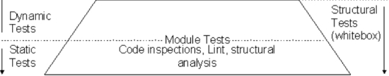
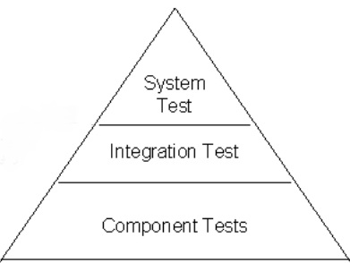

Web-basierte Anwendungen 1
Testing
24. Januar 2013
Studiengang Medieninformatik an der Fachhochschule Köln
Campus Gummersbach
David Wachs
Jeremy Dennis Zervo
Inhalte
- Warum testen?
- Was testen?
- Wie testen?
- Testen mit Javascript - Unit Testing Frameworks
- Übung
Warum testen?
- Menschen machen immer Fehler
- Fehlerwahrscheinlich steigt mit Größe und Komplexität der Anwendung
- Auch Methoden wie Pair Programming garantieren keine hohe Fehlerfreiheit
- Kunde soll ein möglichst fehlerfreies Produkt erhalten
Was testen?
- Verhalten der Software gegenüber den Vorgaben
- Laufzeitverhalten
- Verhalten der Software innerhalb einer Infrastruktur
Wie testen?
Wichtige Erkenntnisse
- Testing ist NICHT debugging
- Tests finden niemals alle Fehler
- Jede Testart findet eine andere Art von Fehler
- Ziel: Fehler finden, nicht die Ursache
Wie testen?
Beispiel Ablauf
Wie testen?
White-Box-Test
- Kenntnisse der inneren Programmstruktur bzw. des Quellcodes
- Testfälle werden anhand der inneren Programmstruktur festgelegt
- Verschiedene Testmethoden (z.B. Überdeckungstests, Modultests)
- Ziel: Quellcode muss gewisse Qualitätskritieren erfüllen (z.B. Zeilenüberdeckung)
Wie testen?
Unit-Test / Modultest

- Module werden getrennt voneinander getestet
- zuerst Ausgangszustand initialisieren
- darauf die zu testenden Operationen ausführen
- Ist-Ergebnis mit Spezifikationen vergleichen
Wie testen?
Black-Box-Test
- Tester haben keine Kenntnisse der inneren Programmstruktur
- Nur das nach außen Sichtbare Verhalten wird getestet (Black-Box)
- Ziel: Übereinstimmung des Softwareverhaltens mit den Spezifikationen
- Aufwendige Erstellung der Tests
Wie testen?
Component-, Integration- und System-Test
|

|
- Softwareverhalten im System testen
- Komponenten zusammen testen
- Komponenten unabhängig voneinander Testen
|
Wie testen?
Beispiel Ablauf Zusammenfassung
Javascript Testing Frameworks
Testen mit Jasmine
Was ist Jasmine?
- Jasmin ist ein Unit-Testing-Framework für JavaScript
- Es wurde stark geprägt und beinhaltet vieles aus ScrewUnit, JSSpec, JSpec und RSpec
- Wichtigsten Zielsetzungen der Macher war und ist:
- Es ist nicht auf bestimmten Browser, Platformen, etc., abestimmt
- Somit funktioniert es überall dort, wo auch JavaScript läuft (Browsers, Server, Handys, etc.)
- Die Syntax ist sprachüblich und einfach
Testen mit Jasmine
Besonderheiten
- Jasmine setzt nicht auf bestimmte JavaScript Frameworks.
- Es ist ein BDD Framework
- Es braucht kein DOM
Testen mit Jasmine
Matcher
- Jeder Matcher kann mit .not verneint werden
- Hier ein paar Beispiele für Matcher:
- expect(x).toEqual(y); (Test gibt kein Fehler, falls y == x)
- expect(x).toBe(y); (Test gibt kein Fehler, falls y gleiches Objekt wie x)
- expect(x).toContain(y); (Test gibt kein Fehler, falls String oder Array x, y beinhaltet)
- weitere
Testen mit Jasmine
Übung 1
Zur uebung1 Jasmin-Tests schreiben auf
tryjasmine.com.
Kleiner Tipp am Rande:
Einfach die uebung1 mit einem beliebigen Editor oder im Browser öffnen und den gesamten Inhalt rechts bei tryjasmine einfügen.
Testen mit Jasmine
Einbindung und Benutzung von Jasmin
- aktuelle Version runterladen
- Source-Dateien in das scr-Verzeichnis
- Spec-Dateien (Tests) in das spec-Verzeichnis
- Source- und Spec Dateien in der SpecRunner.html einbinden
- SpecRunner.html mit Browser öffnen
Testen mit Jasmine
Nützliches bei Jasmin
Um den Test-Code möglich effizent schreiben zu können liefert Jamsine die Funktionen beforeEach() und afterEach()
Hiermit ist es möglich Variablen oder Objekt vor bzw. nach jedem Spec neu zu definieren oder auch zu initialsieren
Testen mit Jasmine
Übung 2
Testen mit Jasmine
Hilfreiche Links
Übung 3
- Test mit QUnit schreiben (BasicCalculator)
- Im Verzeichnis Uebungen/Uebung3/resources/ die BasicCalculatorSpec.js bearbeiten
Das wars!
Fragen?
Vielen Dank für die Aufmerksamkeit!